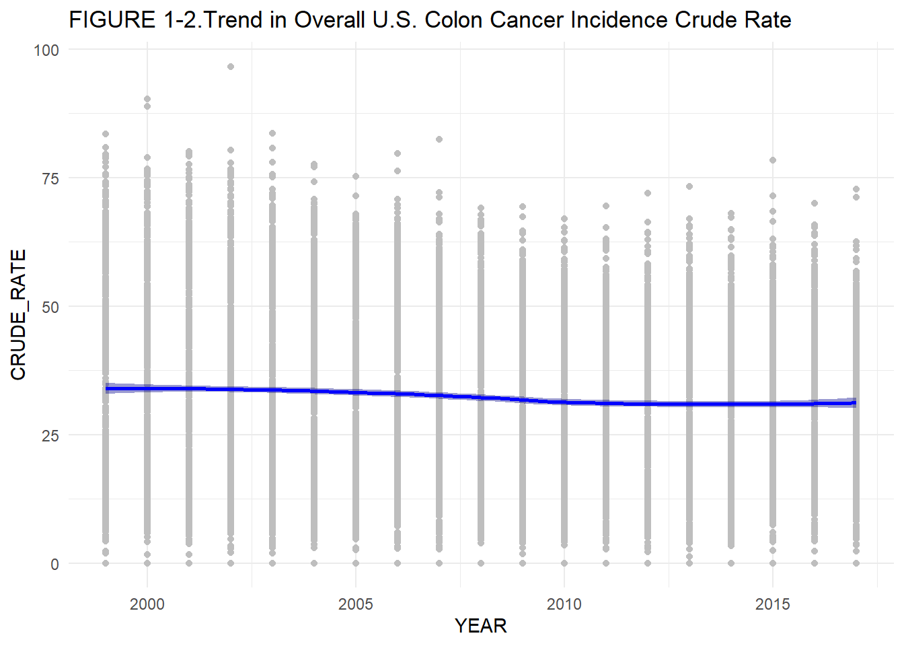
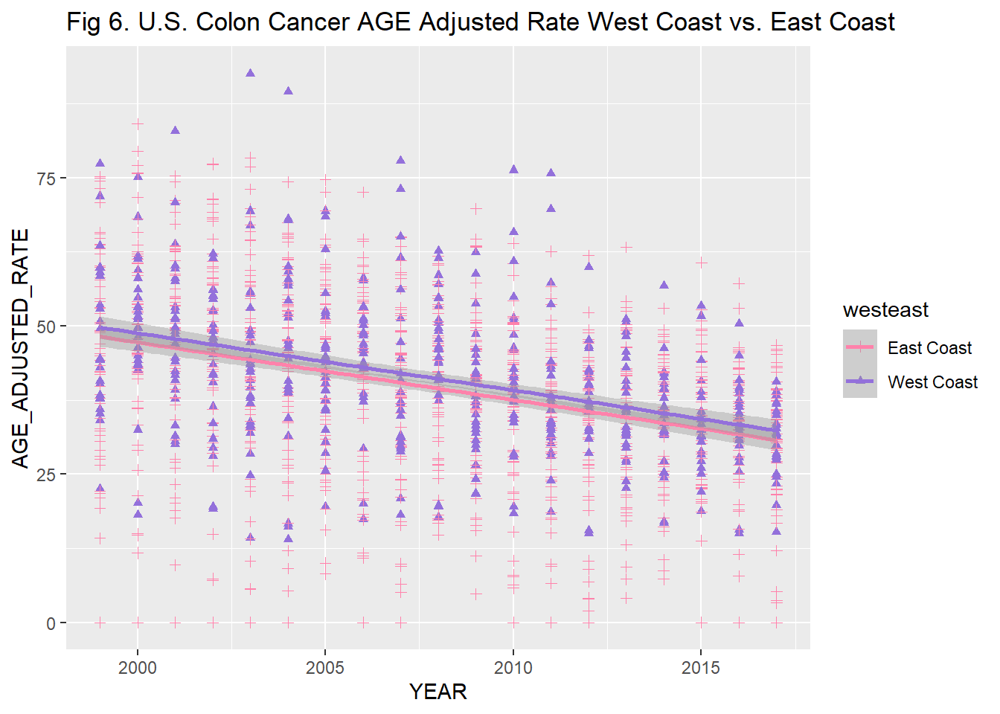
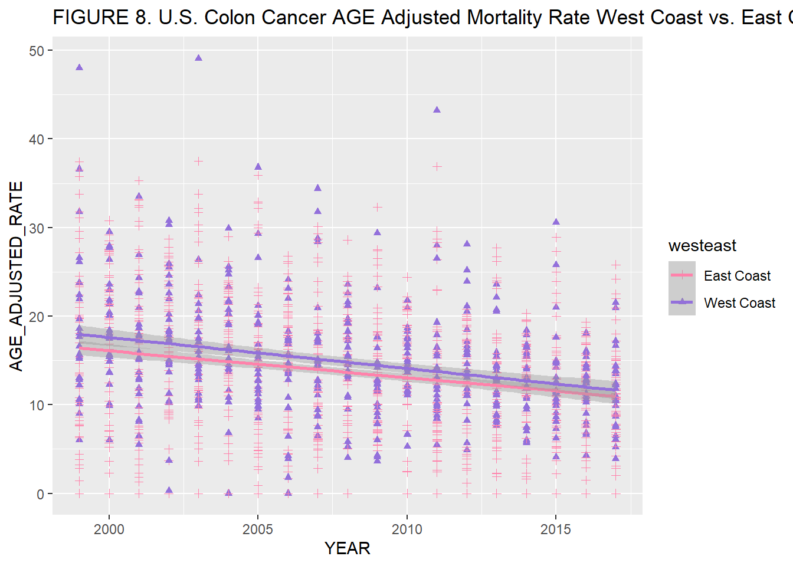

PM566 Final project
Suyeon Ryu
2020 11 17
Comparison in U.S. Colon Cancer Rates between East Coast and West Coast
Introduction
Colorectal cancer was known to have low prevalence rates compared to other types of cancers in U.S. history. In the recent years, however, it was discussed that the proportion of colorectal cancer in U.S. populations has increased. More importantly and interestingly, the incidence and mortality are thought to be different from West Coast to East Coast with unknown causes. This paper will discuss and compare the incidence and mortality rates of colon cancers in U.S. population. Specifically, 3 states representing the West Coast are compared to 7 states representing the East Coast, through the data exploration analyses.
Methods
Data Sources
Cancer Incidence / Mortality Data
Data on cancer incidences/mortalities during 1999 through 2017 were obtained from the United States Cancer Statistics(USCS) data provided by the Centers for Disease Control and Prevention’s National Center for Health Statistics(NCHS). As our focus is specifically colorectal cancers, all other data were omitted from the data set. Then, due to the limited computing power, the 1 in every 20 data was used to perform the data exploratory analysis using R version 3.6.0. Any outliers were assessed from the scatter-plot, and was computationally removed from the data set for the further analyses. No statistical computations were performed in this report.
Selection of West Coast and East Coast
Based on the U.S. map, three reprensentative states that have coast line of Pacific ocean were chosen, which are California, Washington, and Oregon. With the same method, seven representative states that have coast line of Atlantic ocean were chosen, which are New York, Pennsylvania, NewJersey, Virginia, North and South Carolina, and Georgia. To diminish the possible bias coming from the latitutde, Florida was exlcuded.
Demographic characteristics
The data were collected from all sex, racial/ethnic groups, and age(all ages from <1 to 85+). The data collected for Incidence data from NPCR and SEER registries in 49 states cover approximately 98% of U.S. Population. For Mortality data, 100% of U.S. population was covered. For purposes of brevity, in this report, only colon and rectum cancer related information is regarded.
| YEAR | Median Rate | S.D. | Mean |
|---|---|---|---|
| 1999 | 33.5 | 33.5 | 32.68 |
| 2000 | 31.6 | 36.47 | 32.72 |
| 2001 | 42.8 | 40.8 | 37.26 |
| 2002 | 34 | 28.55 | 32.25 |
| 2003 | 30.1 | 34.08 | 34.43 |
| 2004 | 35.3 | 24.7 | 33.65 |
| 2005 | 34.7 | 33.2 | 33.35 |
| 2006 | 40.7 | 31.2 | 34.48 |
| 2007 | 21.2 | 30.48 | 27.13 |
| 2008 | 36.9 | 34.75 | 32.65 |
| 2009 | 20.3 | 35.38 | 27.2 |
| 2010 | 38 | 26.2 | 33.01 |
| 2011 | 24.5 | 33.25 | 28.31 |
| 2012 | 35 | 24.92 | 30.2 |
| 2013 | 34.6 | 25.58 | 31.34 |
| 2014 | 32.3 | 25.68 | 31.19 |
| 2015 | 35.9 | 26.1 | 32.42 |
| 2016 | 38.7 | 21.4 | 34.88 |
| 2017 | 36.6 | 22.55 | 33.31 |
| YEAR | Median Rate | S.D. | Mean |
|---|---|---|---|
| 1999 | 12.7 | 16.48 | 12.37 |
| 2000 | 14.2 | 16.6 | 13.24 |
| 2001 | 11.1 | 16.17 | 12.43 |
| 2002 | 10.6 | 14.85 | 11.97 |
| 2003 | 7.7 | 15.85 | 11.04 |
| 2004 | 7.4 | 14.7 | 10.51 |
| 2005 | 10.4 | 14.4 | 11.24 |
| 2006 | 10.4 | 13.28 | 10.47 |
| 2007 | 9.6 | 12.6 | 10.6 |
| 2008 | 11.8 | 13.1 | 11 |
| 2009 | 10.8 | 14.82 | 11.77 |
| 2010 | 13.2 | 13.07 | 11.24 |
| 2011 | 10.4 | 12.9 | 10.26 |
| 2012 | 11.9 | 12.55 | 10.83 |
| 2013 | 9.7 | 12.4 | 9.99 |
| 2014 | 11.2 | 11.8 | 10.93 |
| 2015 | 8.9 | 10.97 | 10.86 |
| 2016 | 9.8 | 11 | 11.8 |
| 2017 | 11 | 10.2 | 10.83 |
Preliminary Results
Colorectal Cancer Incidence and Mortality Rates and Trends
Overall, the trends in colorectal cancer incidence rate shows decreasing trend over the period of 18 years (1999 to 2017). The rate decreasing slope was steeper until early 2000, then shows stabilizing trend from 2007 to 2017 (Figure 1-2). Regardless, the overall mortality from colon cancer in U.S. maintained around same rate over 17 years, without showing particularly decreasing trends (Figure 2-2).

Comparison of Colon Cancer Incidence Rates between EAST and WEST
To ease the understanding of the geographical representation of each coast, the states which colon cancer data were collected from were highlighted (FIGURE 3). The bar graph of colorectal cancer incidence rates of each coast as well as the un-considered areas by year were plotted(FIGURE 4). Then, to aid the comparison of incidence rate over the years, the scatterplot of each coasts with regression lines were plotted (FIGURE 5). Based on the comparison scatterplot with regression lines, it is apparent that the incidence rates are decreasing over the years, but the rate of decreasing is slower for the West Coast compared to the East Coast.

Colorectal Cancer Incidence Crude Rates

Colorectal Cancer Incidence Age-adjusted Rates
Because the data is covering fairly large spectrum of age(<1 to 85+), the age-adjusted data were used to plot the graphs of colorectal cancer incidence rates. The unconsidered areas were excluded from the data set. With the age-adjusted crude rate, not only the West Coast show the higher incidence rate over all years covered, but also it was more apparent that the incidence decreasing trend is significantly slower for the West Coast area (FIGURE 6).

Comparison of Colon Cancer Mortality Rates between EAST and WEST
Colorectal Cancer Mortality Crude Rates
The U.S. colorectal cancer mortality rates were compared between West and East coasts through exploratory data analysis. From the regression line from the scatterplot(FIGURE 7), the slope of the West Coast mortality rate is positive; that is, the colon cancer mortality rate in the west coast area were increasing over the 17 years. East coast colorectal mortality rates show decreasing trend. Again, as the age range is big, the age-adjusted rates were compared to minimize potential bias within the data(FIGURE 8). With age-adjusted colorectal mortality data, both area’s mortality rates show decreasing trends. However, the decreasing slopes are noticeably different; the West Coast decreasing trend is way slower.

Conclusion
In this paper, colorectal cancer incidence rates and mortality rates were compared in two opposite sides of U.S., West coast including 3 states facing Pacific ocean, and East coast including 7 states facing Atlantic ocean. Both rates were evidently decreasing over the 18 years covered by the dataset. However, the speed of decreasing is noticeably different between two areas, as suggested by many colorectal oncology surgeons. This finding may serve as the starting point of interesting pathway to researches intending to find the causes, and it may lead to potential preventive measure development for colorectal cancers.